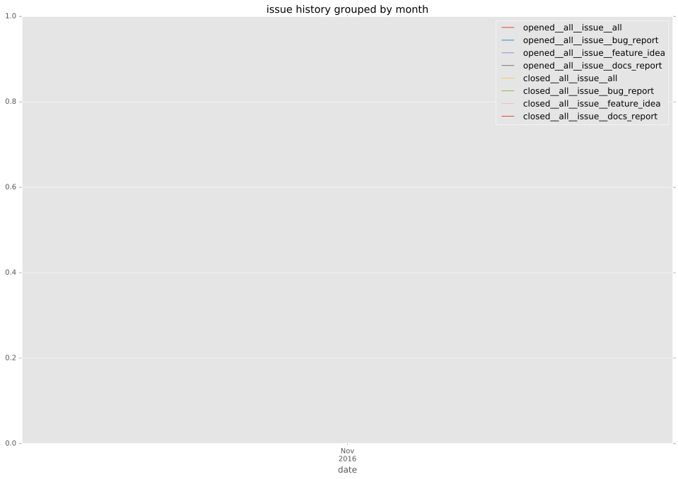

total issue counts
feature pull request: 2
bugfix pull request: 5
pullrequest: 10
docs pull request: 3
issue history

days open by issue type
feature pull request
count: 2
std: 74.9533188058
min: 2
max: 108
median: 55.0
mean: 55.0
bugfix pull request
count: 7
std: 3.63841933236
min: 0
max: 8
median: 1.0
mean: 2.71428571429
all
count: 14
std: 43.0173105969
min: 0
max: 108
median: 1.5
mean: 24.2142857143
pullrequest
count: 0
std: nan
min: nan
max: nan
median: nan
mean: nan
docs pull request
count: 5
std: 53.9583172458
min: 0
max: 101
median: 8.0
mean: 42.0
closures grouped by total days open